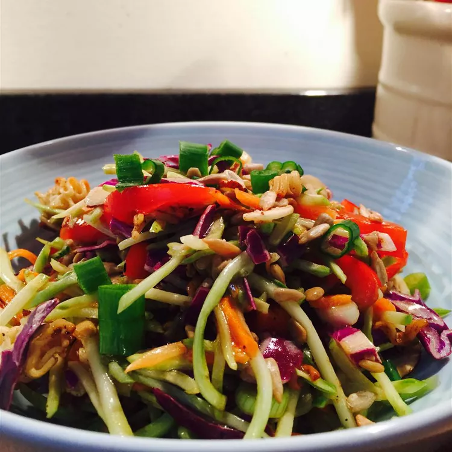

Ramen Slaw
Description

This is super quick ramen noodle coleslaw with sunflower seeds that is a favorite for potlucks.
Ingredients
- 1 (12 ounce) package broccoli coleslaw mix
- ½ cup sunflower seeds
- ½ cup slivered almonds
- 1 (3 ounce) package Oriental-flavored ramen noodles, broken into small pieces.
- ½ cup canola oil
- ¼ cup white sugar
- ¼ cup white wine vinegar
- 4 green onions, chopped
Steps
- Combine broccoli coleslaw mix, sunflower seeds, almonds, and ramen noodles together in a bowl.
- Whisk canola oil, sugar, ramen noodle seasoning packet, and vinegar together in a separate bowl; pour over slaw mixture.
- Whisk Italian dressing and salad spice mix together until smooth. Combine pasta, tomatoes, bell peppers, and olives in a salad bowl.
- Fold in green onions.
- Chill in refrigerator for 1 1/2 hours before serving.
- Enjoy!